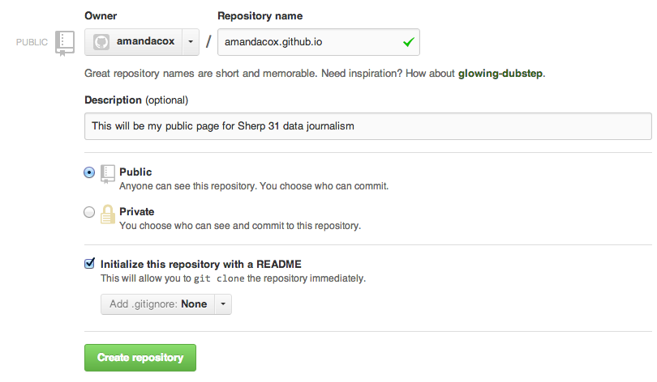
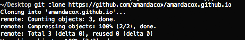

An introduction to the course and the importance of data skills for 21st century journalists — especially those who cover scientific and technical subjects. After doing basic first-day-type activities and introductions, we'll go over a short history of data journalism, show some prominent examples of great science journalism, and then get right into coding up a page from scratch.
As we hope you will realize, it's extremely annoying using a site like NYU's to maintain a real web site. So let's take advantage of the free sites available on Github pages to behave like adults.
username/username.github.io. Here's what Amanda's looked like:

data-journalism and navigate to it in the Terminal. (Ask your neighbor if you have trouble.)git clone followed by the url you copied. So, in Amanda's case, she would tyoe git clone https://github.com/amandacox/amandacox.github.io.git and then hit enter. If it worked, you should get some messages saying things like this:

index.html file you created above (the table with homework dates on it) to your project folder. git add . git commit -m "initial commit for class" git push Your assignment for Monday is simple. First, enter the url for your public GitHub site (gitHubUsername.github.io) on this public Google doc.
Second, edit your index.html page to include your name, and email address and push it to git using the terminal. A sample file is here, or you can do it by hand if you prefer.